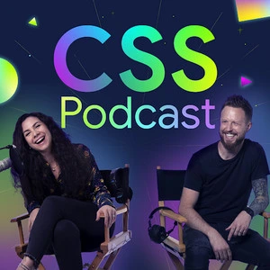
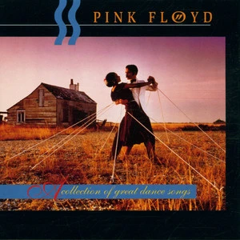
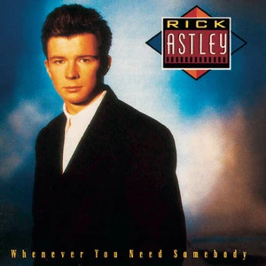
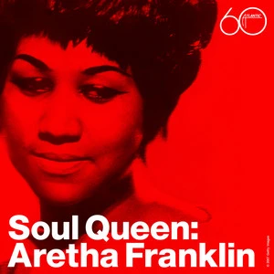
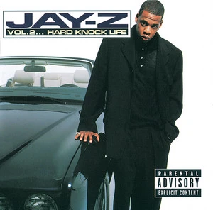
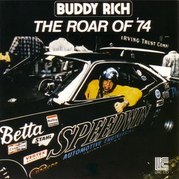
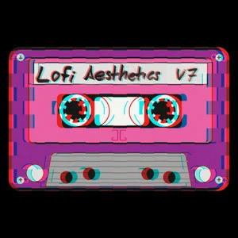

Tvoje knihovna
Zobrazit vše

The CSS Podcast
Playlist | CSS Developers
My macdonalds order
Playlist | Akdan Bob
Skladby

Another Brick In The Wall
Pink Floyd

Never Gonna Give You Up
Rick Astley

Think
Aretha Franklin
Hello
Adele

Can I Get A ...
JAY-Z

Big Mac
Buddy Rich

No Pickles
James G